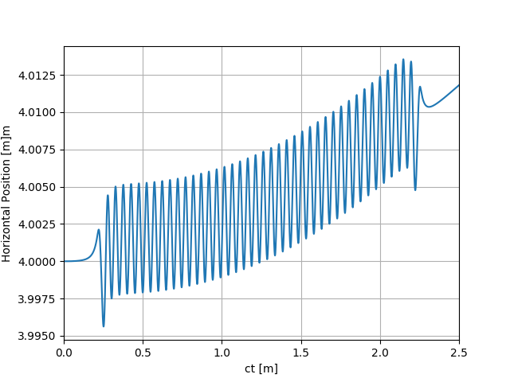
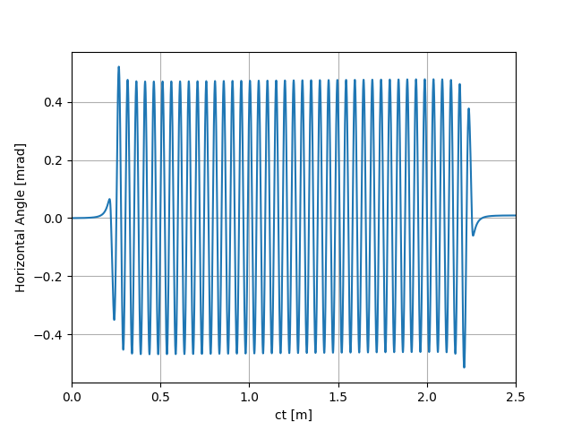
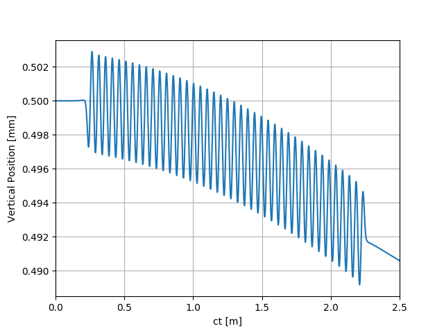
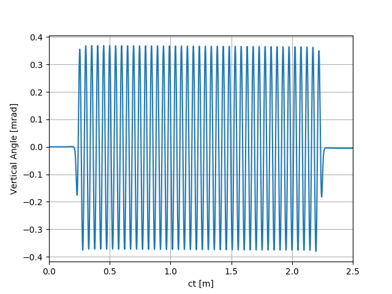

Note
Click here to download the full example code
SRW Example #1 (kick matrix)¶
Problem¶
Calculating electron trajectory in 3D magnetic field of an APPLE-II undulator, from the tabulated field and from a kick-matrix
Example Solution¶
- 
- 
- 
- 
Out:
SRWLIB Python Example # 1:
Calculating electron trajectory in 3D magnetic field of an APPLE-II undulator, from the tabulated field and from a kick-matrix
Reading magnetic field data from files ... done
Performing calculation ... done
Plotting the results (close all graph windows to proceed with the script execution) ... done
from __future__ import print_function #Python 2.7 compatibility
from srwlib import *
from uti_plot import *
import os
print('SRWLIB Python Example # 1:')
print('Calculating electron trajectory in 3D magnetic field of an APPLE-II undulator, from the tabulated field and from a kick-matrix')
#**********************Input/Output File Names:
strExDataFolderName = 'data_example_01' #example data sub-folder name
arFldInFileNames = ['epu49HEtot.dat'] #3D Magnetic Field data file names
arKickMatrInFileNames = ['epu49he_kick_m.dat'] #Kick Matrix file names
strCenTrajOutFileName = 'ex01_res_traj.dat' #file name for output trajectory data
strOffTrajOutFileName = 'ex01_res_traj_off.dat' #file name for output trajectory data
strOffKickTrajOutFileName = 'ex01_res_traj_kick_off.dat' #file name for output trajectory data
#**********************Auxiliary function to read a matrix from a file:
def AuxReadInMatrix(f, nx, ny, nch):
nx = int(round(nx)) #int() required for Python 2.7 compatibility
ny = int(round(ny))
nch = int(round(nch))
flatM = [0]*ny*nx
ic = 0
for iy in range(ny):
s = f.readline()
pSep = 0
pSepNext = nch
for ix in range(nx):
sCur = s[pSep:pSepNext]
isNonNum = 1
for i in range(nch):
if sCur[i] != ' ':
isNonNum = 0
break
if isNonNum == 0:
flatM[ic] = float(sCur)
else:
flatM[ic] = 0
pSep = pSepNext
pSepNext += nch
ic += 1
return flatM
#**********************Auxiliary function to read tabulated Kick-Matrix data (Radia format):
def AuxReadInKickM(filePath, sCom):
f = open(filePath, 'r')
f.readline() #1st line: just pass
f.readline() #2nd line: just pass
f.readline() #3rd line: just pass
rz = float(f.readline()) #4th line: longitudinal range
f.readline() #5th line: just pass
nx = int(f.readline()) #6th line: number of points in horizontal direction
f.readline() #7th line: just pass
ny = int(f.readline()) #8th line: number of points in vertical direction
f.readline() #9th line: just pass
f.readline() #10th line: just pass "START"
flatKickMx = AuxReadInMatrix(f, nx + 1, ny + 1, 14)
f.readline() #just pass
f.readline() #just pass "START"
flatKickMy = AuxReadInMatrix(f, nx + 1, ny + 1, 14)
f.readline() #just pass
f.readline() #just pass "START"
#IntB2 = AuxReadInMatrix(f, nx + 1, ny + 1, 14)
arMx = array('d', [0]*nx*ny)
arMy = array('d', [0]*nx*ny)
i = 0
for iy in range(1, ny + 1):
for ix in range(1, nx + 1):
#arMx[i] = KickMx[ix][iy]
#arMy[i] = KickMy[ix][iy]
#print(ix, iy, i, arMx[i])
ofst = (ny + 1 - iy)*(nx + 1) + ix
arMx[i] = flatKickMx[ofst]
arMy[i] = flatKickMy[ofst]
#print(ix, iy, i, arMx[i])
i += 1
#xMin = KickMx[1][0]
#xMax = KickMx[nx][0]
xMin = flatKickMx[1]
xMax = flatKickMx[nx]
xc = 0.5*(xMin + xMax)
rx = xMax - xMin
#yMin = KickMx[0][1]
#yMax = KickMx[0][ny]
yMax = flatKickMx[1*(nx + 1)]
yMin = flatKickMx[ny*(nx + 1)]
yc = 0.5*(yMin + yMax)
ry = yMax - yMin
return SRWLKickM(arMx, arMy, 2, nx, ny, 1, rx, ry, rz, xc, yc, 0)
#**********************Auxiliary function to read tabulated 3D Magnetic Field data from ASCII file:
def AuxReadInMagFld3D(filePath, sCom):
f = open(filePath, 'r')
f.readline() #1st line: just pass
xStart = float(f.readline().split(sCom, 2)[1]) #2nd line: initial X position [m]; it will not actually be used
xStep = float(f.readline().split(sCom, 2)[1]) #3rd line: step vs X [m]
xNp = int(f.readline().split(sCom, 2)[1]) #4th line: number of points vs X
yStart = float(f.readline().split(sCom, 2)[1]) #5th line: initial Y position [m]; it will not actually be used
yStep = float(f.readline().split(sCom, 2)[1]) #6th line: step vs Y [m]
yNp = int(f.readline().split(sCom, 2)[1]) #7th line: number of points vs Y
zStart = float(f.readline().split(sCom, 2)[1]) #8th line: initial Z position [m]; it will not actually be used
zStep = float(f.readline().split(sCom, 2)[1]) #9th line: step vs Z [m]
zNp = int(f.readline().split(sCom, 2)[1]) #10th line: number of points vs Z
totNp = xNp*yNp*zNp
locArBx = array('d', [0]*totNp)
locArBy = array('d', [0]*totNp)
locArBz = array('d', [0]*totNp)
for i in range(totNp):
curLineParts = f.readline().split('\t')
locArBx[i] = float(curLineParts[0])
locArBy[i] = float(curLineParts[1])
locArBz[i] = float(curLineParts[2])
f.close()
xRange = xStep
if xNp > 1: xRange = (xNp - 1)*xStep
yRange = yStep
if yNp > 1: yRange = (yNp - 1)*yStep
zRange = zStep
if zNp > 1: zRange = (zNp - 1)*zStep
return SRWLMagFld3D(locArBx, locArBy, locArBz, xNp, yNp, zNp, xStep*(xNp - 1), yStep*(yNp - 1), zStep*(zNp - 1), 1)
#**********************Input Parameters and Input/Output structures:
partTraj = SRWLPrtTrj() #Central Trajectory
partTraj.partInitCond.x = 0 #Initial Transverse Coordinates (initial Longitudinal Coordinate will be defined later on) [m]
partTraj.partInitCond.y = 0
newInitCondX = 0.004 #Initial Transverse Coordinates for Off-Axis Trajectory [m]
newInitCondY = 0.0005
partTraj.partInitCond.xp = 0 #Initial Transverse Velocities
partTraj.partInitCond.xp = 0
partTraj.partInitCond.gamma = 3/0.51099890221e-03 #Relative Energy
partTraj.partInitCond.relE0 = 1 #Electron Rest Mass
partTraj.partInitCond.nq = -1 #Electron Charge
partTraj.ctStart = 0 #Start Time for the calculation
partTraj.ctEnd = 2.5 #magFldCnt.arMagFld[0].rz
partTraj.allocate(10001) #Number of Points for Trajectory calculation
arPrecTrajFromField = [1] #Precision parameters for Trajectory calculation from Field:
#[0]: integration method No:
#1- fourth-order Runge-Kutta (precision is driven by number of points)
#2- fifth-order Runge-Kutta
#[1],[2],[3],[4],[5]: absolute precision values for X[m],X'[rad],Y[m],Y'[rad],Z[m] (yet to be tested!!) - to be taken into account only for R-K fifth order or higher
#[6]: tolerance (default = 1) for R-K fifth order or higher
#[7]: max. number of auto-steps for R-K fifth order or higher (default = 5000)
arPrecTrajFromKickM = [1] #Precision parameters for Trajectory calculation from Kick-Matrices:
#[0]: switch specifying whether the new trajectory data should be added to pre-existing trajectory data (=1, default)
#or it should override any pre-existing trajectory data (=0)
#**********************Defining Magnetic Field:
magFldCnt = SRWLMagFldC() #Container
magFldCnt.allocate(1) #Magnetic Field consists of 1 part
print(' Reading magnetic field data from files ... ', end='')
filePath = os.path.join(os.getcwd(), strExDataFolderName, arFldInFileNames[0])
magFldCnt.arMagFld[0] = AuxReadInMagFld3D(filePath, '#')
print('done')
magFldCnt.arXc[0] = 0 #Transverse Coordinates of ID Center [m]
magFldCnt.arYc[0] = 0
magFldCnt.arZc[0] = 0 #Longitudinal Coordinate of ID Center [m]
magFldCnt.arMagFld[0].interp = 3 #Magnetic Field Interpolation Method, to be entered into 3D field structures below (to be used e.g. for trajectory calculation):
#1- bi-linear (3D), 2- bi-quadratic (3D), 3- bi-cubic (3D), 4- 1D cubic spline (longitudinal) + 2D bi-cubic
magFldCnt.arMagFld[0].nRep = 1 #Number of parts of ID
partTraj.partInitCond.z = -0.5*magFldCnt.arMagFld[0].rz #Initial Longitudinal Coordinate (before ID)
#**********************Defining Kick Matrices:
filePath = os.path.join(os.getcwd(), strExDataFolderName, arKickMatrInFileNames[0])
kickMatr = AuxReadInKickM(filePath, '#')
#**********************Calculation (SRWLIB function call)
print(' Performing calculation ... ', end='')
srwl.CalcPartTraj(partTraj, magFldCnt, arPrecTrajFromField) #First Calculate Central Trajectory
partTraj.save_ascii(os.path.join(os.getcwd(), strExDataFolderName, strCenTrajOutFileName))
partTraj.partInitCond.x = newInitCondX
partTraj.partInitCond.y = newInitCondY
srwl.CalcPartTrajFromKickMatr(partTraj, kickMatr, arPrecTrajFromKickM)#Calculate Off-Axis Trajectory using Kick-Matrix method
partTraj.save_ascii(os.path.join(os.getcwd(), strExDataFolderName, strOffKickTrajOutFileName))
srwl.CalcPartTraj(partTraj, magFldCnt, arPrecTrajFromField) #Calculate same Off-Axis Trajectory by Runge-Kutta integration in 3D Magnetic Field
partTraj.save_ascii(os.path.join(os.getcwd(), strExDataFolderName, strOffTrajOutFileName))
print('done')
#**********************Plotting results
print(' Plotting the results (close all graph windows to proceed with the script execution) ... ', end='')
ctMesh = [partTraj.ctStart, partTraj.ctEnd, partTraj.np]
for i in range(partTraj.np): #converting from [m] to [mm] and from [rad] to [mrad]
partTraj.arX[i] *= 1000
partTraj.arXp[i] *= 1000
partTraj.arY[i] *= 1000
partTraj.arYp[i] *= 1000
uti_plot1d(partTraj.arX, ctMesh, ['ct [m]', 'Horizontal Position [m]m'])
uti_plot1d(partTraj.arXp, ctMesh, ['ct [m]', 'Horizontal Angle [mrad]'])
uti_plot1d(partTraj.arY, ctMesh, ['ct [m]', 'Vertical Position [mm]'])
uti_plot1d(partTraj.arYp, ctMesh, ['ct [m]', 'Vertical Angle [mrad]'])
uti_plot_show()
print('done')
Total running time of the script: ( 0 minutes 2.295 seconds)